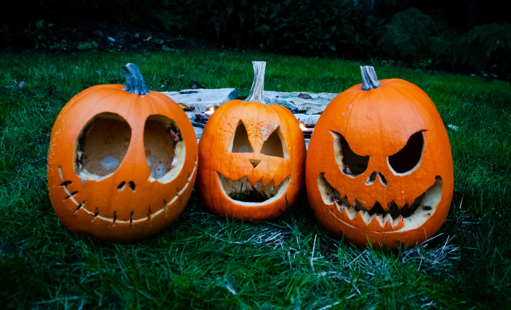

Theme in Yellow
By Carl Sandburg

I spot the hills
With yellow balls in autumn.
I light the prairie cornfields
Orange and tawny gold clusters
And I am called pumpkins.
On the last of October
When dusk is fallen
Children join hands
And circle round me
Singing ghost songs
And love to the harvest moon;
I am a jack-o'-lantern
With terrible teeth
And the children know
I am fooling.